🍳 3-Egg Omelet
A simple and delicious breakfast option that's perfect for any time of day.

| Prep Time | Cook Time | Servings |
|---|---|---|
| 5 mins | 5 mins | 1 person |
| Calories | Protein | Carbs | Fats |
|---|---|---|---|
| 430 kcal | 24g | 2g | 35g |
🍪 Chocolate Chip Cookies
Classic, golden-brown cookies featuring crisp edges and a soft, chocolatey center.

| Prep Time | Cook Time | Servings |
|---|---|---|
| 15 mins | 10 mins | 24 cookies |
| Calories | Protein | Carbs | Fats |
|---|---|---|---|
| 150 kcal | 2g | 20g | 7g |
🟫 Double Chocolate Brownies
A rich, fudgy, and incredibly decadent treat packed with double the chocolate goodness.

| Prep Time | Cook Time | Servings |
|---|---|---|
| 15 mins | 30 mins | 16 squares |
| Calories | Protein | Carbs | Fats |
|---|---|---|---|
| 200 kcal | 2g | 28g | 11g |
🥗 Grilled Chicken Salad
A refreshing and satisfying salad packed with flavor and fresh vegetables.

| Prep Time | Cook Time | Servings |
|---|---|---|
| 15 mins | 10 mins | 2 people |
| Calories | Protein | Carbs | Fats |
|---|---|---|---|
| 390 kcal | 38g | 10g | 22g |
🥢 Chicken and Vegetable Stir Fry
A healthy and flavorful dish that's quick to prepare and perfect for a weeknight.

| Prep Time | Cook Time | Servings |
|---|---|---|
| 10 mins | 10 mins | 4 people |
| Calories | Protein | Carbs | Fats |
|---|---|---|---|
| 380 kcal | 35g | 24g | 12g |
🍗 Crispy Baked Chicken
Tender chicken pieces rolled in savory parmesan garlic potato flakes and oven-baked in rich melted butter.

| Prep Time | Cook Time | Servings |
|---|---|---|
| 15 mins | 45 mins | 4 people |
| Calories | Protein | Carbs | Fats |
|---|---|---|---|
| 460 kcal | 42g | 18g | 24g |
🍽️ French-Scalloped Potatoes
Layers of thinly sliced potatoes and tender onions baked in a rich, thyme-infused garlic cream sauce.
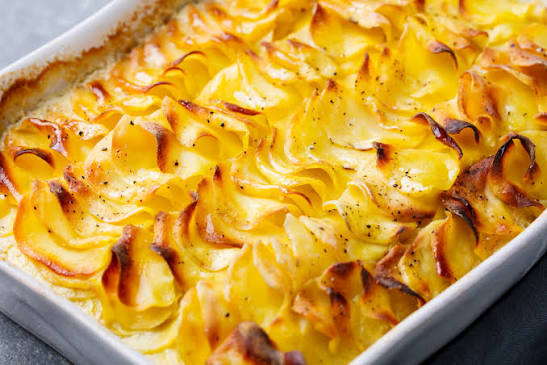
| Prep Time | Cook Time | Servings |
|---|---|---|
| 20 mins | 55 mins | 4 people |
| Calories | Protein | Carbs | Fats |
|---|---|---|---|
| 260 kcal | 6g | 20g | 18g |
🧀 Melted Cheese Hor D'oeuvres
A warm, savory party appetizer featuring blended cheddar and Swiss cheese broiled on crisp onion crackers.
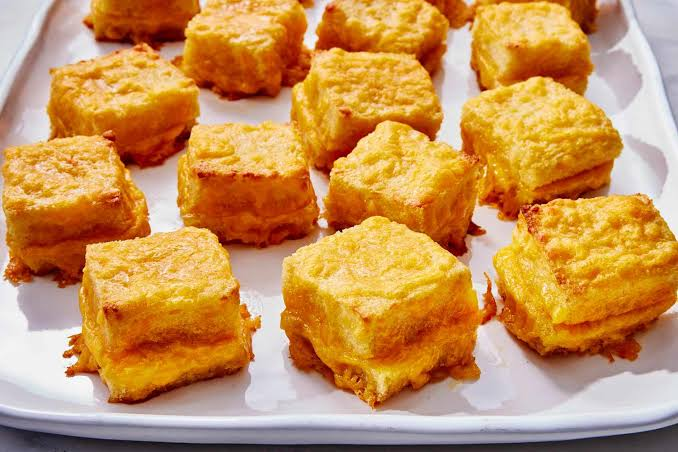
| Prep Time | Cook Time | Yield |
|---|---|---|
| 10 mins | 5 mins | 3 platters |
| Calories | Protein | Carbs | Fats |
|---|---|---|---|
| 160 kcal | 5g | 10g | 11g |
🧅 Onion Canape
A classic party bite featuring a rich whipped butter and mayo base spread over thin bread, topped with fresh onion and bubbly parmesan.
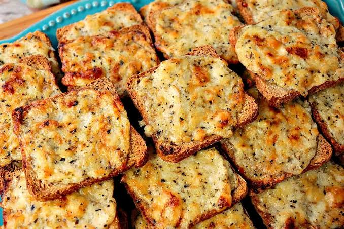
| Prep Time | Bake Time | Yield |
|---|---|---|
| 15 mins | 15 mins | Flexible Batches |
| Calories | Protein | Carbs | Fats |
|---|---|---|---|
| 85 kcal | 2g | 5g | 7g |
🍕 Pizza Loaves
A fun and crispy twist on pizza night featuring meat-stuffed sourdough baguettes baked to bubbly perfection.
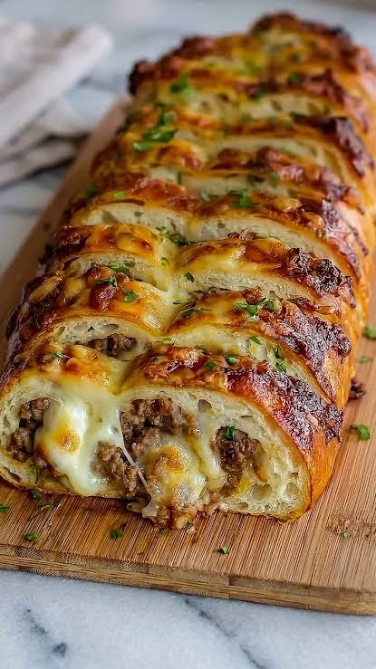
| Prep Time | Cook Time | Servings |
|---|---|---|
| 15 mins | 23 mins | 4 people |
| Calories | Protein | Carbs | Fats |
|---|---|---|---|
| 615 kcal | 52g | 34g | 35g |
🫓 Protein Breakfast Biscuits
A savory, fluffy breakfast meal-prep option packed with chicken sausage, cheddar cheese, and Greek yogurt.
| Prep Time | Cook Time | Servings |
|---|---|---|
| 15 mins | 25 mins | 12 biscuits |
| Calories | Protein | Carbs | Fats |
|---|---|---|---|
| 232 kcal | 13g | 23g | 10g |
🍞 Pumpkin Raisin Nut Bread
A deeply spiced autumn classic loaded with pure pumpkin, sweet plump raisins, and crunchy chopped pecans.
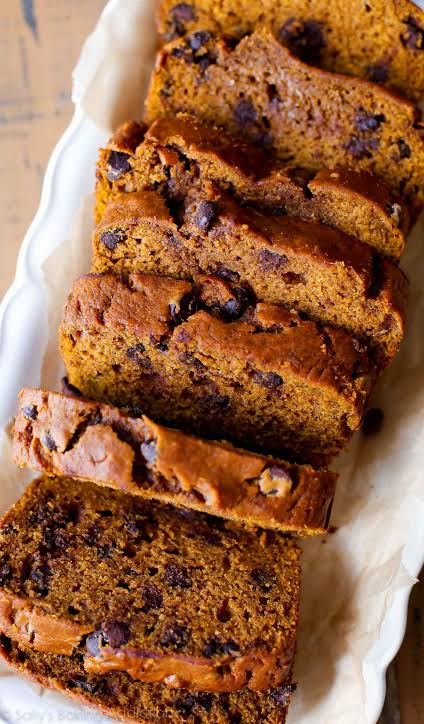
| Prep Time | Bake Time | Yield Options |
|---|---|---|
| 20 mins | 25-60 mins | Loaves or Muffins |
| Calories | Protein | Carbs | Fats |
|---|---|---|---|
| 220 kcal | 3g | 36g | 8g |
🥔 Rosemary Steak Fries
Thick-cut baking potatoes seasoned with aromatic rosemary, garlic, herbs, and a kick of crushed red pepper flakes.
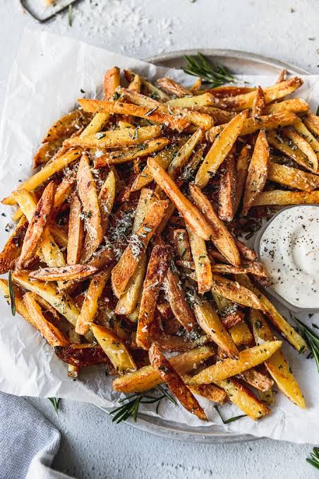
| Prep Time | Cook Time | Servings |
|---|---|---|
| 15 mins | 40 mins | 6 people |
| Calories | Protein | Carbs | Fats |
|---|---|---|---|
| 190 kcal | 3g | 25g | 10g |
🥓 Roasted Dates w/ Parm & Bacon
Sweet, jammy pitted dates stuffed with cream cheese and parmesan, wrapped in crisp smoky bacon.
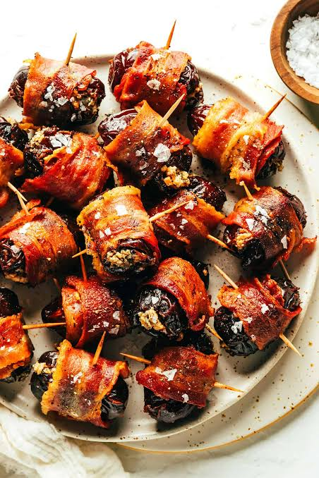
| Prep Time | Cook Time | Yield |
|---|---|---|
| 20 mins | 20 mins | 18+ pieces |
| Calories | Protein | Carbs | Fats |
|---|---|---|---|
| 90 kcal | 3g | 10g | 5g |
🥘 Southern Chicken Casserole
A comforting, hearty southern classic featuring crisp bacon, tender chicken, and pan-browned potatoes.
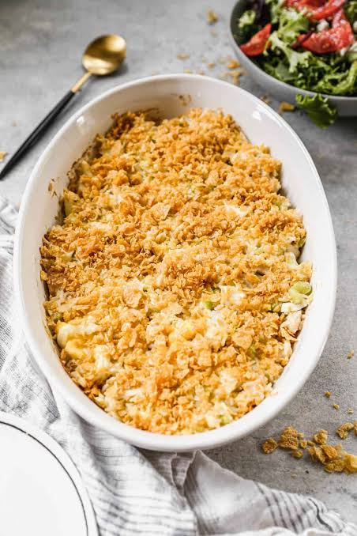
| Prep Time | Cook Time | Servings |
|---|---|---|
| 20 mins | 40 mins | 4 people |
| Calories | Protein | Carbs | Fats |
|---|---|---|---|
| 790 kcal | 62g | 45g | 40g |
🍧 Strawberry Mango Sorbet
A vibrant, icy-smooth refreshment exploding with naturally sweet frozen fruits and a splash of zesty citrus.
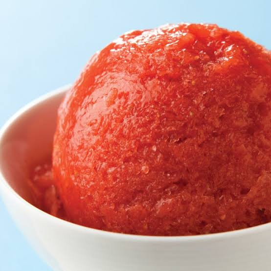
| Prep Time | Freeze Time | Servings |
|---|---|---|
| 10 mins | 8 hours | 4 people |
| Calories | Protein | Carbs | Fats |
|---|---|---|---|
| 60 kcal | 1g | 15g | 0g |
🧆 Sweet & Sour Meatballs
Savory chopmeat meatballs spiked with horseradish and Tabasco, baked tender and coated in a bold, rich homemade glaze.
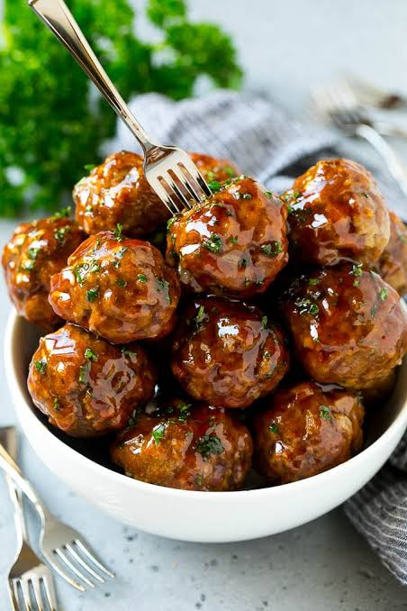
| Prep Time | Bake Time | Servings |
|---|---|---|
| 20 mins | 20 mins | 4-6 people |
| Calories | Protein | Carbs | Fats |
|---|---|---|---|
| 410 kcal | 26g | 32g | 18g |
🧅 Vidalia Onion Spread
A sweet, deeply caramelized roasted Vidalia onion and garlic spread blended with fresh chives.
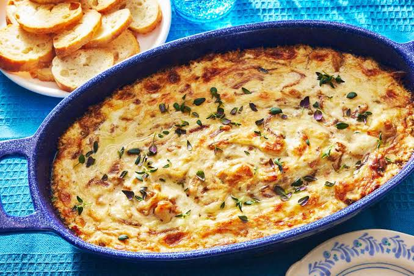
| Prep Time | Cook Time | Servings |
|---|---|---|
| 15 mins | 40 mins | 8 servings |
| Calories | Protein | Carbs | Fats |
|---|---|---|---|
| 95 kcal | 1g | 12g | 5g |
🎂 Wellesley Fudge Cake
A rich, traditional chocolate fudge layer cake topped with a velvety, smooth, homemade chocolate frosting.
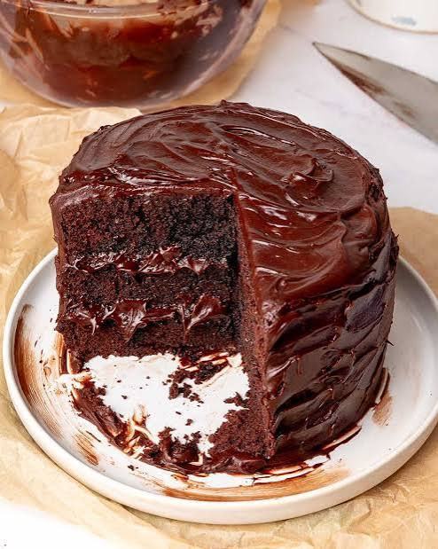
| Prep Time | Cook Time | Yield |
|---|---|---|
| 25 mins | 35 mins | 2 layers |
| Calories | Protein | Carbs | Fats |
|---|---|---|---|
| 380 kcal | 4g | 54g | 16g |
🫐 Homemade Blueberry Muffins
Fluffy, bakery-style muffins bursting with fresh blueberries and finished with a golden crumb topping.
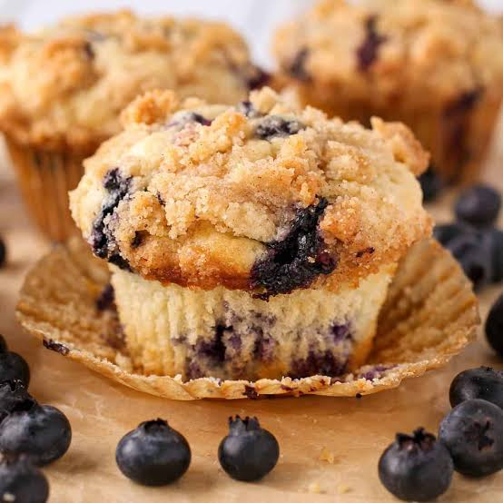
| Prep Time | Bake Time | Yield |
|---|---|---|
| 15 mins | 20 mins | 12 muffins |
| Calories | Protein | Carbs | Fats |
|---|---|---|---|
| 210 kcal | 4g | 32g | 8g |